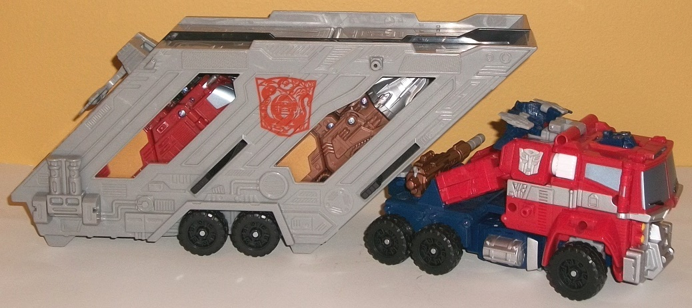
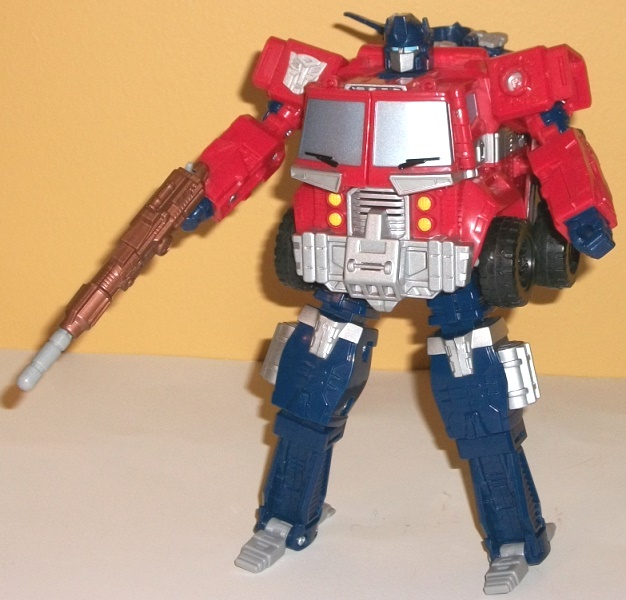
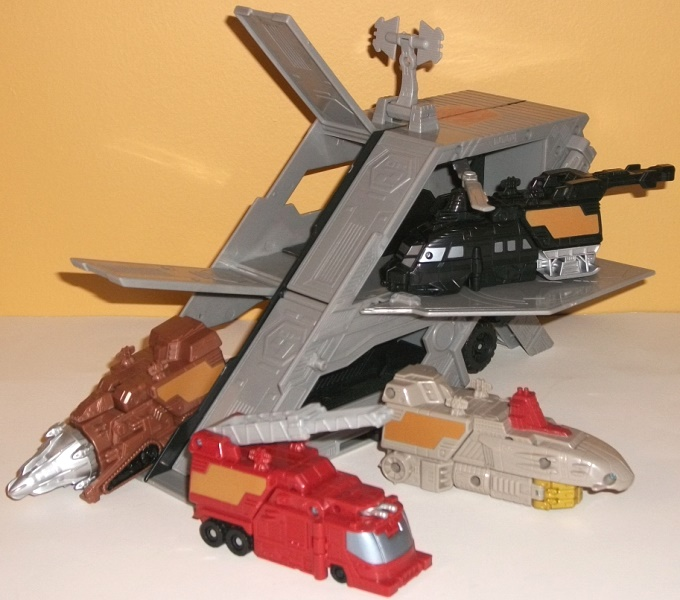
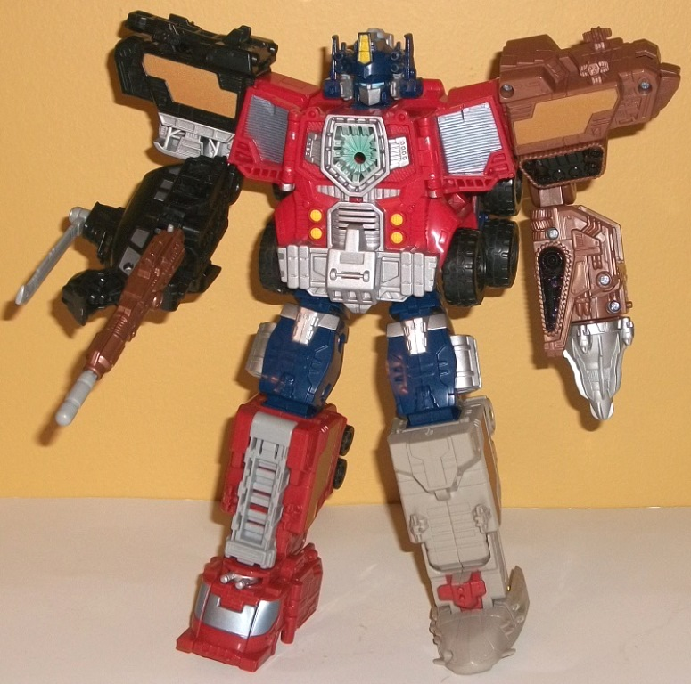

Allegiance
: Autobot
Size
: Leader
Price
: $80 U.S.
Difficulty of Transformation
: Medium
Color Scheme
: Light semi-metallic
milky gray, dark blue, light pale red, black, dull red, light brownish
gray, milky brown, and some silver, light metallic silvery blue, metallic
bronze, metallic pale bronze, white, light metallic greenish gold, yellow,
pale light bluish green, and light sky blue
Rating
: 6.8
(NOTE: Because this is a repaint, this is not a full-blown review. This mainly covers any changes made to the mold and the color scheme, and merely compares it to Energon Leader class Optimus Prime. For a review on the mold itself, read the review of Energon Leader class Optimus Prime here .)


For the "core" robot,
this redeco of Optimus Prime sticks much closer to his regular color layout
when compared to the original Energon toy. Optimus has got red for his
upper arms and main body, with dark blue saved mostly for the back half
of his truck mode and legs, and with a fair number of silver paint apps
and gray plastic spread throughout to keep Optimus from looking too two-tone.
He's got the G1-esque silver stripe down the middle sides and light metallic
silvery blue paint on his windows; there really isn't much on the core
robot that isn't by-the-book, here. The only change from Optimus' typical
colors-- and it is a slight difference-- is that the red is a bit paler
in coloration than usual, and there's a bit of white plastic on a few minor
"connecting parts" like the ratchets in his shoulders. His rifle is also
painted a really nice metallic bronze, as opposed to its usual black color,
which contrasts marvelously against all the other colors of his core robot
mode. The number of paint apps on the core robot is generally quite impressive,
leaving no large area (except his arms) unpainted-- even his headlights
are painted yellow, and the inside of his "spark chamber" in combined mode
has a bit of a pale light bluish green spray paint app around it, to make
it look like a bit of "Matrix glow", if you will.


As for his accessories,
Optimus' trailer is still almost entirely gray-- heck, it's even MORE gray
than Energon Optimus' trailer, which is saying something. Other than black
tires, a couple of interior pieces, and some really nifty "Year of the
Snake" Autobot symbols that mesh the Autobot symbol with the Chinese zodiac
snake, the rest of the trailer is gray. However, although it's a light
milky gray and thus rather boring overall, it has some glitter mixed in,
making it look slightly metallic in shade and thus more interesting than
your usual light milky gray. Optimus' drones that he combines with for
"Super Mode" generally have more subdued colors when compared to their
original
iterations. The helicopter is mostly black, with a bit of silver and gray;
the fire truck is a dull red with silvery blue front windows and a light
gray ladder; the driller is a rather nice shade of brown plastic, with
a bit of milkiness to it that keeps it from looking too flat, and with
a bit of black and silver paint on the treads and drill, respectively,
to break up the colors a bit; and the submarine is a rather sickly greenish
shade of gray, looking almost like it's got a bit of algae discoloration.
There's also some light metallic greenish gold and dark red to break up
all this blah greenish gray, but overall they really should've gone for
a different color with the submarine-- it's the only drone that I don't
think looks at least as good as its original version. All of the vehicle-appendages
also have nice metallic pale bronze paint apps near the back end of each
of them, adding another color to the mix (though it complements, rather
than contrasts, with the brown driller vehicle). The sides of the fire
truck and front of the submarine could use another paint app or two, but
the drones are largely well-painted, overall, and all of their colors either
contrast or complement nicely against the core robot when they're combined
with him.
The electronics have
been gutted from the toy, but no real mold changes have been made to it
compared to the original Energon Optimus Prime. This version does have
the "faceplate up" version that only the later releases of Energon Optimus
Prime had, however.
"Year of the Snake"
Optimus Prime's color scheme is generally a step up from Energon Optimus
Prime's, and I'm not saying that just because the core robot has a more
G1-y color scheme-- it just looks more visually interesting, and the drones
don't use the "primary" color shades, using more subdued colors while still
keeping from looking boring. Thus the whole scheme looks a little more
creative (gray trailer aside), and overall I'd recommend this over Energon
Optimus Prime (bad color choices on the submarine drone aside). It unfortunately
still remains one of the worst Optimus molds of all time, though, and no
color scheme is going to change that.
Review by Beastbot